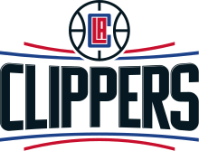
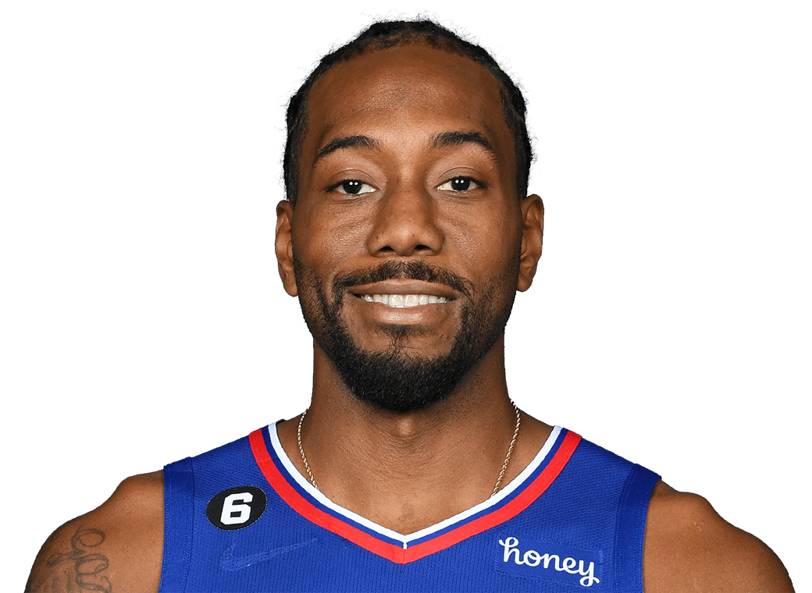

Los Angeles Clippers

Los Angeles Clippers so ameriška profesionalna košarkarska ekipa s sedežem v Los Angelesu. Clippers tekmujejo v Nacionalni košarkarski zvezi (NBA) kot član pacifiške divizije v zahodni konferenci lige. Clippersi svoje domače tekme igrajo v Crypto.com Areni, ki si jo delijo z moštvom NBA Los Angeles Lakers, Los Angeles Sparks iz ženske nacionalne košarkarske zveze (WNBA) in Los Angeles Kings iz nacionalne hokejske lige (NHL). Clippersi se nameravajo do leta 2024 preseliti v lastno areno, Intuit Dome, v bližnjem Inglewoodu. Franšiza je bila ustanovljena kot Buffalo Braves leta 1970 kot razširitvena ekipa. Bravesi, ki jih vodi Bob McAdoo iz dvorane slavnih, so v osmih sezonah v Buffalu trikrat dosegli končnico lige NBA. Konflikti s Canisius Golden Griffins zaradi Buffalo Memorial Auditoriuma in prodaje franšize so leta 1978 pripeljali do njihove preselitve iz Buffala v San Diego v Kaliforniji in kasnejše preimenovanje v San Diego Clippers, glede na jadrnice, ki so jih videli v zalivu San Diego. [9] Ekipa je v vseh šestih letih v San Diegu videla malo uspeha na igrišču in izpustila končnico. Leta 1984 je lastnik Donald Sterling kontroverzno preselil franšizo v Los Angeles brez odobritve lige NBA, kar je bilo dovoljeno po pravnem sporu med ligo in Sterlingom. V svojih prvih 27 sezonah v Los Angelesu so se Clippersi le štirikrat kvalificirali za postsezono in zmagali v enem krogu končnice. Pogosto so veljali za večne poražence v ameriškem profesionalnem športu, kar je povzročilo neugodne primerjave z zgodovinsko uspešnimi Lakersi.
Trenutna ekipa

Izven sezone 2019 se je Kawhi Leonard odločil za prekinitev zadnjega leta pogodbe s Toronto Raptors in postal eden najboljših prostih igralcev. Leonard se je odločil za podpis s Clippersi, ko se je ekipa dogovorila za zamenjavo za Paula Georgea iz Oklahoma City Thunder. Za Georgea so Clippersi zamenjali Shaija Gilgeousa-Alexandra, Danila Gallinarija, štiri nezaščitene izbire v prvem krogu, zaščiteno izbiro v prvi rundi in dve zamenjavi izbir. Po prekinitvi sezone NBA 2019–20 so bili Clippersi ena od 22 ekip, povabljenih v NBA Bubble, da sodelujejo v zadnjih 8 tekmah redne sezone. Leto so končali z rezultatom 49–23 kot drugi nosilci zahodnih konferenc. Kljub visokim pričakovanjem Clippers niso uspeli zmagati v svoji prvi konferenčni polfinalni seriji, ko so jih v sedmih tekmah izločili Denver Nuggets. Poraz je bil že drugič, da so Clippersi izgubili konferenčni polfinale, potem ko so vodili s 3–1 v seriji. Teden dni kasneje je Ballmer objavil, da je Rivers odstopil z mesta glavnega trenerja po skupni odločitvi. Riversa je nasledil Tyronn Lue. Kljub izgubi Leonarda zaradi poškodbe v končnici leta 2021 so Clippersi v polfinalu premagali prvouvrščene Utah Jazz, kar jih je popeljalo do njihovega prvega nastopa v finalu zahodne konference v zgodovini franšize. Clippersi so v šestih tekmah izgubili konferenčni finale proti Phoenix Suns in jim tako preprečili prvo uvrstitev v finale lige NBA.